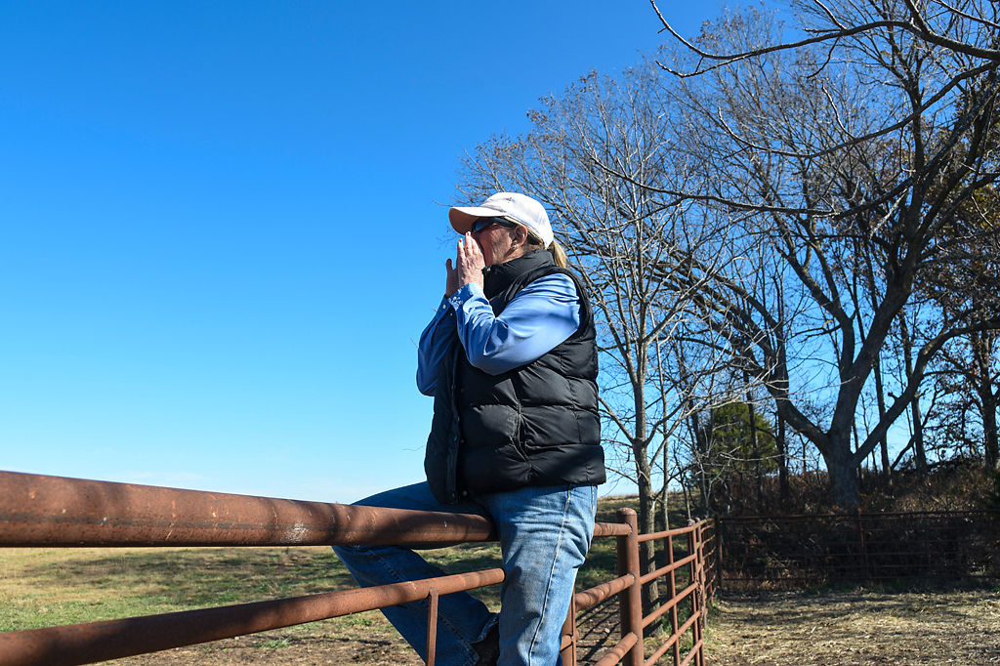
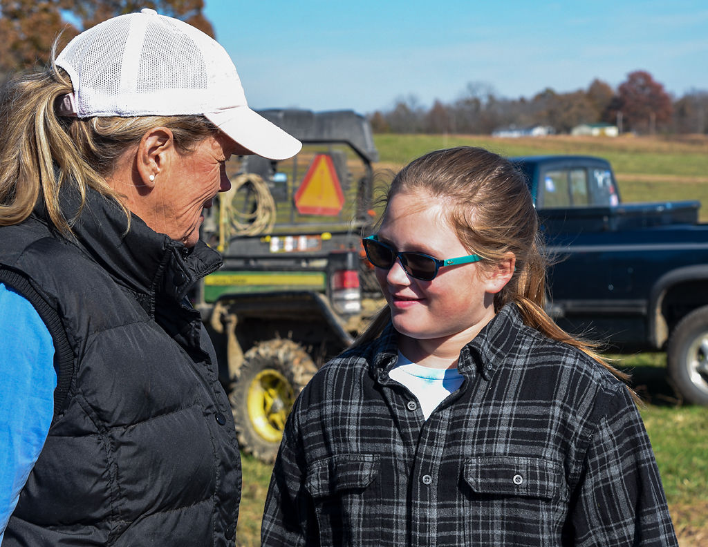

Byline information
Karisha Devlin has been helping women farmers succeed for 15 years.
Devlin is co-founder and CEO of Annie's Project, which empowers women farmers by teaching them marketing and business management, as well as giving them legal and human resources.
In her decade-and-a-half of teaching the 16-hour class, she said she's met women from all kinds of professional backgrounds, each one bringing something new to the table.
One of them is Marcia Moreland.
Moreland[?] participated in Annie's Project and now operates her own farm.
As a kid, Moreland said she would cry in her porch as she watched her dad leave with her brother for a day of farming while she stayed home with her mom.
Now, she has her own thriving farm with cattle and a fields of alfalfa in Crane, Missouri. A lot of the headway she's made resulted from her experience with Annie's Project and the community she found there.
Moreland, 60, remembers when women weren't allowed into Future Farmers of America. Now, when she attends FFA and other farming conventions, she can see more and more members like her.
"We talked about financing and banks, fence laws and estate planning," Moreland said. "And man, it was an eyeopener."
Helping women thrive in this traditionally male business is Devlin's passion, and she's seen progress so far. The number of students in her class has increased over the years, following a national trend.
The USDA’s Economic Research Service reports that the number of women-operated farms (the individual most responsible for day-to-day management) nearly tripled from 5% in 1978 to 14% by 2007.
In 2012, slightly fewer than 46,000 farmers in Missouri were women. Five years later in 2017, that number had grown to 58,000, according to the latest Census of Agriculture conducted by the National Agricultural Statistics Service.
The number of male farmers, however, has slightly decreased in Missouri, going from approximately 104,000 to 102,000.
Moreland believes women are willing to learn, adapt and diversify their crops. In 2016, Annie's Project asked former students in a survey how the classes changed their business practices and lives on the farm.
Nearly 70% answered that they saw an increase in income after taking the classes, and 85% reported an increase in quality of life.
"It's all about educating and empowering women," Devlin said. "It's not just the classes, but the connections and the network that we build. Women are mentoring each other."

Devlin[?], left, works on a fence post, which is just one facet of maintaining a farm.
Agriculture can be a very lonely activity, Devlin said, so projects like hers can bring women together and build a support system for them.
For Moreland, it happened when she became the owner of a farm after a divorce.
"They didn't teach me how to fly," Moreland said. "They reminded me that I already knew how to do it."
Another program bringing women farmers together is a two-day conference called Pearls of Production. It serves women involved in livestock production, giving them hands-on experience with techniques and technologies to improve their daily activities.
This year's conference, for example, offered classes in performing blood tests and DNA injections in cattle. It was held Nov. 1 and 2 in Columbia.
"Women producers are playing a more active role all the time," said Heather Conrow, a field specialist in livestock with MU Extension. "This numbers are increasing and will continue to do so."
Conrow was a founding board member of Pearls of Production and helps put the conference together. This year, she taught classes about intramuscular and subcutaneous injections in ruminants to approximately 50 attendees.
"I think the stigma of women in agriculture is going away," Conrow said.
Women who never thought of playing an active role on production go to the conference and realize all the possibilities before them. It's a feeling of, "if she can do it, I can do it too," Conrow said.
Conferences and projects like these are becoming more popular throughout the country. Annie's Project, for example, takes place in 33 states, and there are plans to take it to an international level.
Moreland, left, smiles at her grandaughter, Lily, while they are out on the farm.
It seems to be paying off for Moreland. She is teaching her 9-year-old granddaughter Lily the basics of farming.
The young girl can pick out the right tool, feed the cattle and even drive the John Deere Gator. Her grandmother says Lily has more interest in farming than the grandsons do.
Advertisement here